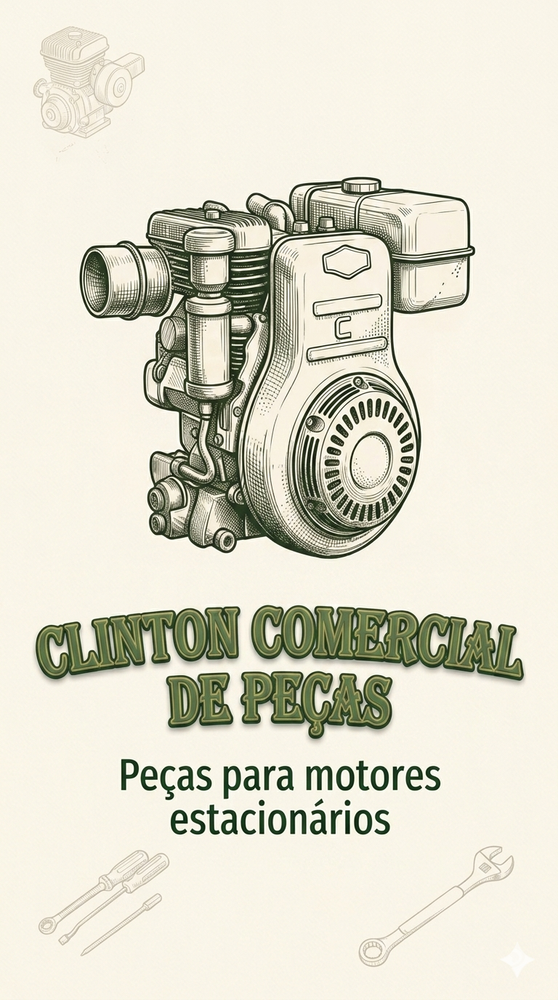
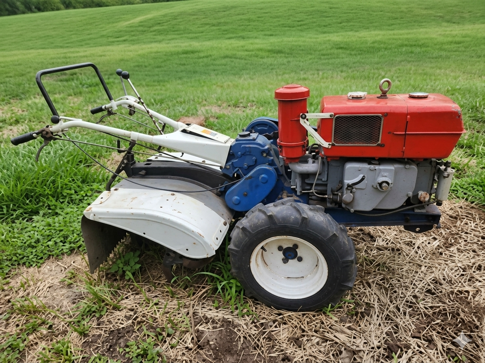

Qualidade e confiabilidade
Marcas reconhecidas no mercado, com foco em segurança, eficiência e durabilidade.

Curitiba · Guabirotuba
Mais de 55 anos de excelência em vendas na linha agrícolas com ênfase em microtratores.
A Clinton Comercial é referência em autopeças na linha agrícola em Curitiba. Localizada no bairro Guabirotuba, atuamos com foco em qualidade, confiança e atendimento técnico especializado.
Com ampla experiência no segmento, trabalhamos com grande variedade de peças, incluindo autopeças das marcas Tobatta, Yammar, e Agrale. priorizando produtos de marcas reconhecidas no mercado.

Fornecer peças da linha agrícolas com qualidade, confiabilidade e atendimento técnico especializado, contribuindo para o sucesso dos nossos clientes em Curitiba e região.
Na Clinton Comercial, oferecemos uma linha das principais marcas do mercado, com foco em peças da linha agrícolas.
Peças e conjuntos para manutenção com procedência e desempenho.
Peças para manutenção de seu motor estacionário.
Equipamentos e insumos para as mais variadas aplicações.
Marcas reconhecidas no mercado, com foco em segurança, eficiência e durabilidade.
Equipe preparada para suporte técnico e orientação na escolha da solução certa.
Região de fácil acesso em Curitiba, para mais praticidade no seu dia a dia.
Compromisso, seriedade e foco na satisfação de quem confia na gente.
Venha nos visitar e conheça as melhores soluções em peças, motores e equipamentos para o seu negócio.
Google Mapas Gerador
Endereço
Av. Senador Salgado Filho, 1243 — Guabirotuba — Curitiba/PR
Telefone
(41) 3039-7091
(41) 3296-3887
E-mail
clintoncomercial@gmail.com